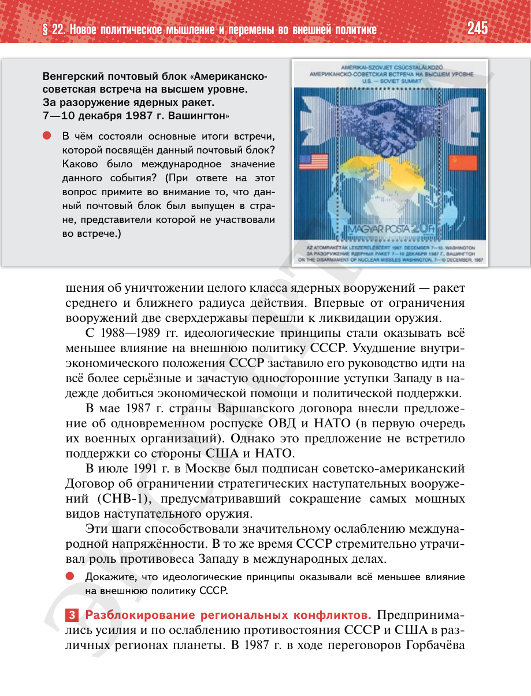

⌂
Мединский.нет
Последнее обновление: 29.08.2026
Мединский.нет
›
История России. 11 класс. Базовый уровень
›
Глава I. СССР в 1945—1991 гг.
›
§ 22. Новое политическое мышление и перемены во внешней политике
›
стр. 246

← стр. 245
Оглавление
стр. 247 →
×